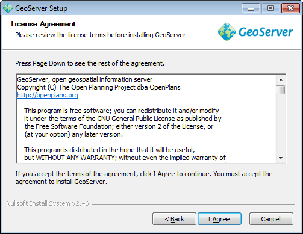
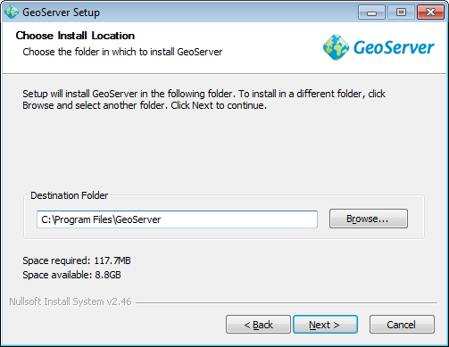
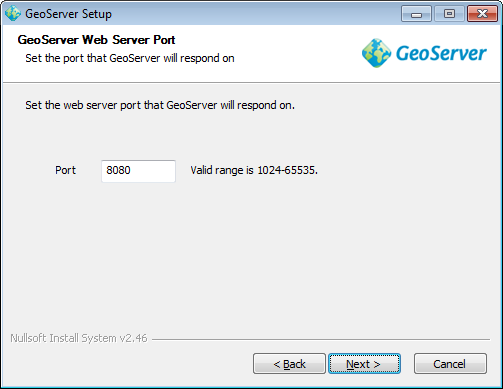
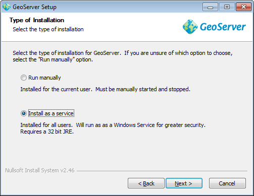

Windows Installer¶
The Windows installer provides an easy way to set up GeoServer on your system. With no configuration files to edit or command line setting, everything can be done through the Windows GUI.
Navigate to the GeoServer Download page at http://geoserver.org/display/GEOS/Download.
Select the version of GeoServer that you wish to download. If you’re not sure, select the Stable version at http://geoserver.org/display/GEOS/Stable.
Click on the link for the Windows installer.

Downloading the Windows installer
After downloading, double-click on the file to launch.
At the Welcome screen, click Next.

Welcome screen
Read the License and click I Agree.
GeoServer license
Select the directory of the installation, then click Next.
GeoServer install directory
Select the Start Menu directory name and location, then click Next.

Start menu location
Enter the path to a valid Java Runtime Environment (JRE). GeoServer requires a valid JRE in order to run, so this step is required. The installer will inspect your system and attempt to automatically populate this box with the path contained in your %JAVA_HOME% variable. If this variable is undefined, you may not have a JRE on your system. In this case, you can download a JRE at http://www.oracle.com/technetwork/java/javase/downloads/index.html. Once the JRE is downloaded and installed, restart the GeoServer installer. When finished, click Next.
Note
An example of a valid path would be C:\Program Files\Java\jre6.
Warning
Don’t include the \bin in the JRE path. So if javaw.exe is located at C:\Program Files\Java\jre6\bin\javaw.exe, set the path to be C:\Program Files\Java\jre6.
Note
Oracle Java SE 6 or newer is strongly recommended. (As of GeoServer 2.2.x, Oracle JRE 5 is no longer supported.) A Java Development Kit (JDK) is not required to run GeoServer. For more information about Java and GeoServer, please see the section on Java Considerations.

Selecting a valid JRE
Enter the path to your GeoServer data directory or select the default. Previous GeoServer users may already have a data directory that they wish to use. If this is your first time using GeoServer, you should select the Default data directory. When finished, click Next.

Setting a GeoServer data directory
Enter the username and password for administration of GeoServer. GeoServer’s Web Administration Interface requires authentication for management, and what is entered here will become those administrator credentials. The defaults are admin / geoserver. It is recommended to change these from the defaults, but this is not required. When finished, click Next.

Setting the username and password for GeoServer administration
Enter the port that GeoServer will respond on. This affects the location of the GeoServer Web Administration Interface, as well as the endpoints of the GeoServer Web Map Service and Web Feature Service. The default port is 8080, although any valid unused port will work. When finished, click Next.
Setting the GeoServer port
Select whether GeoServer should be run manually or installed as a service. When run manually, GeoServer is run like a standard application under the current user. When installed as a service, GeoServer in integrated into Windows Services, and thus is easier to administer. If running on a server, or to manage GeoServer as a service, select Install as a service. Otherwise, select Run manually. When finished, click Next.
Installing GeoServer as a service
Review your selections and click the Back button if any changes need to be made. Otherwise, click Install.

Verifying settings
GeoServer will install on your system. When finished, click Finish to close the installer.
If you installed GeoServer as a service, it is already running. Otherwise, you can start GeoServer by going to the Start Menu, and clicking Start GeoServer in the GeoServer folder.
Navigate to http://[SERVER_URL]:[PORT]/geoserver/ (Ex: http://localhost:8080/geoserver/) to access the GeoServer Web Administration Interface.
If you see GeoServer in your browser, then congratulations, GeoServer is successfully installed!

GeoServer installed and running successfully